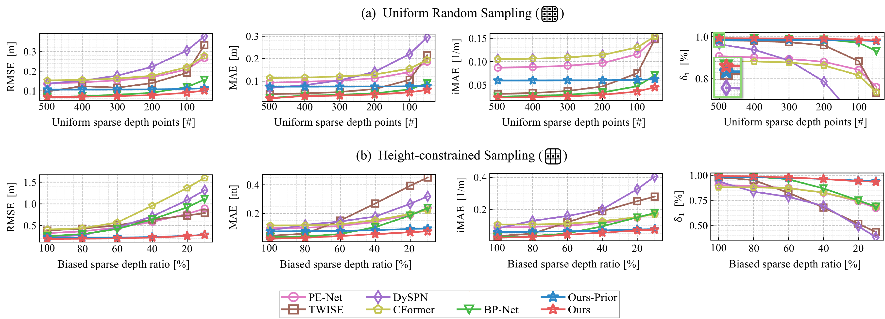
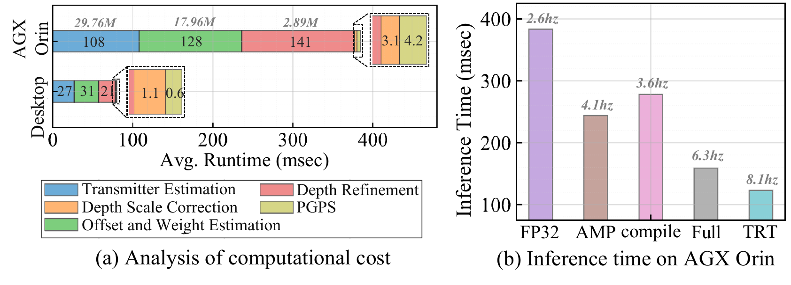
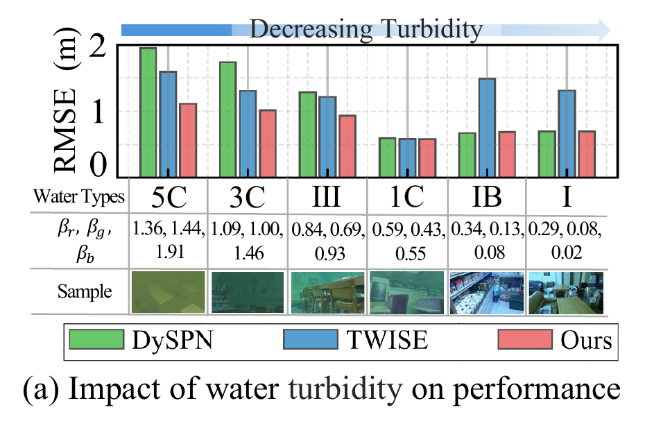
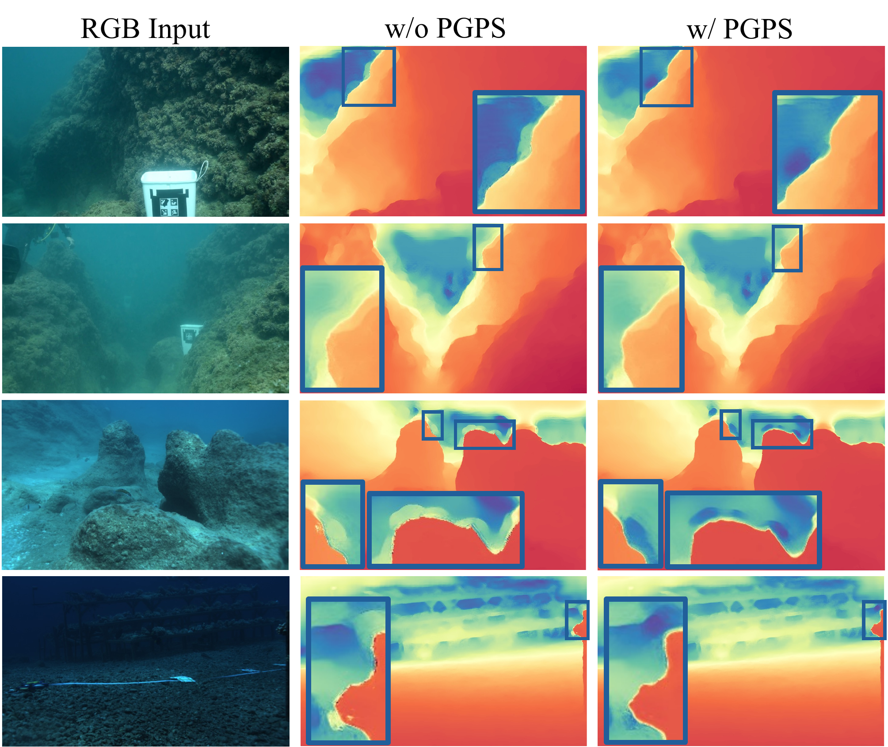
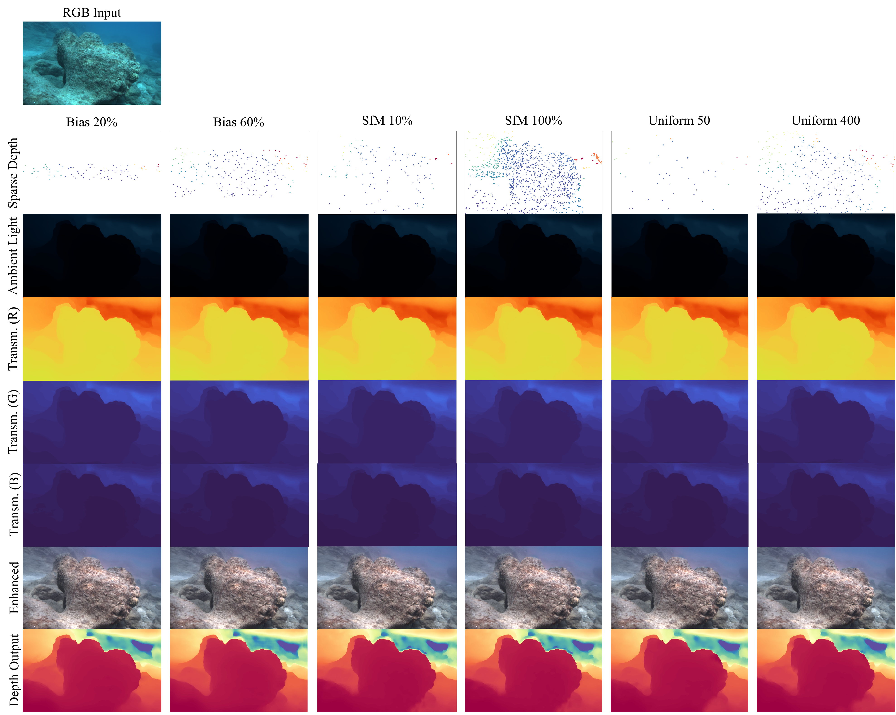
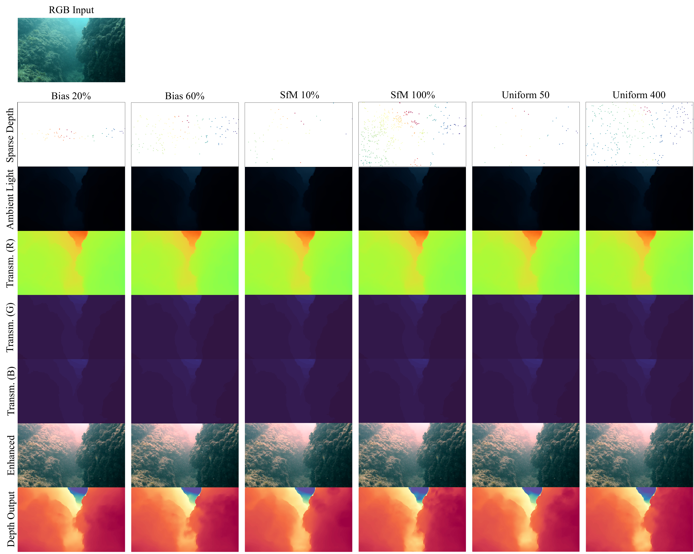
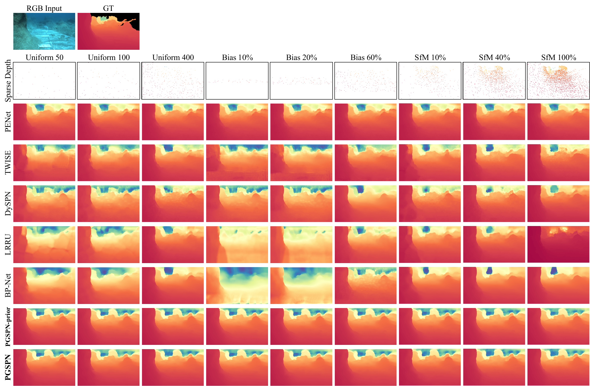
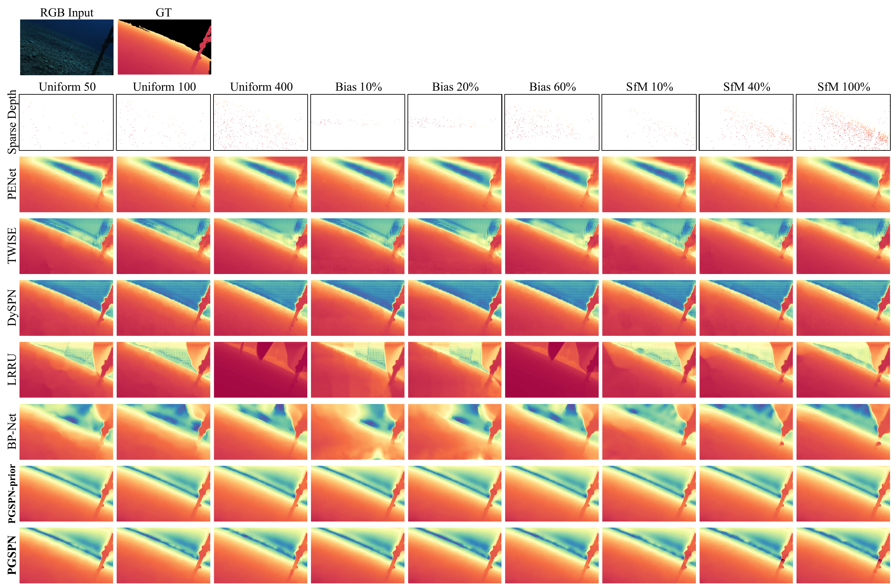
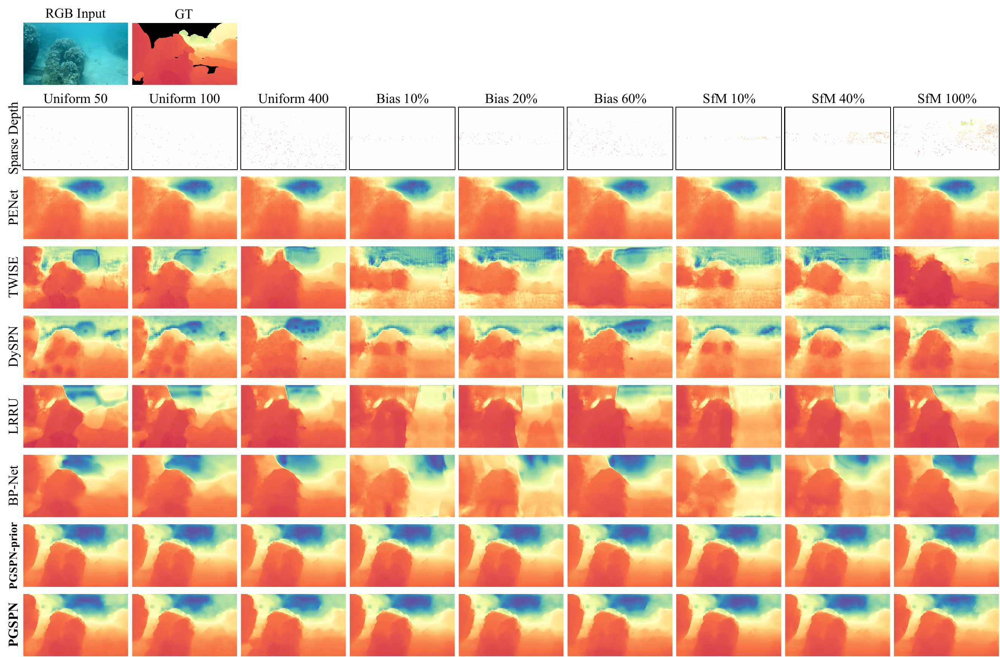

Mathematical derivation, extended results, and qualitative comparisons
Under the Beer–Lambert law, the physical transmission satisfies $\mathbf{T}_{\text{phys},c}(\mathbf{x}) = \exp(-\beta_c\,\mathbf{D}(\mathbf{x}))$, making $-\log \mathbf{T}_{\text{phys},c}$ a zero-intercept linear function of depth. However, real cameras introduce nonlinear distortions (gamma, tone mapping), breaking this ideal relation.
Following the multi-degradation imaging model, we parameterize the learned transmission as a power-law transform:
where $A_c > 0$, $\gamma_c > 0$ absorb camera nonlinearities, and $\tilde{\beta}_c = \gamma_c \beta_c$. In the log-domain $s_c(\mathbf{x}) = -\log \hat{\mathbf{T}}_c(\mathbf{x})$:
The log-surrogate and metric depth are related by an affine mapping (not zero-intercept). The ideal case $A_c{=}1, \gamma_c{=}1$ reduces to zero-intercept, but in practice both scale and offset are needed. Hence we calibrate via least-squares:
where $c^*$ is the channel with minimum reconstruction error against sparse depth.
| Method | rock_garden1 (★★★) | flatiron (★) | ||
|---|---|---|---|---|
| SfM 100% | Bias 60% | SfM 100% | Bias 60% | |
| Scale-only ($b{=}0$) | 0.334 | 0.450 | 0.248 | 0.405 |
| Affine (ours) | 0.261 (↓21.8%) | 0.386 (↓14.2%) | 0.196 (↓20.8%) | 0.222 (↓45.1%) |
The affine variant consistently achieves 14–45% lower RMSE. The gain is largest under high sparsity (Bias 60%), where fewer calibration points make the offset correction more critical.
We evaluate generalization on SeaThru D3 using our FLSea-trained model without fine-tuning. The performance gap over baselines widens as sparsity increases, confirming that the physics-guided prior generalizes across environments.

Cross-dataset validation on SeaThru D3. (a) Uniform sampling (50–500 pts) and (b) Height-constrained sampling (10–100%). PGSPN maintains stable accuracy while baselines degrade sharply under extreme sparsity.
| Method | SfM 100% | Bias 60% | ||||
|---|---|---|---|---|---|---|
| RMSE ↓ | $\delta_1$ ↑ | DBI ↓ | RMSE ↓ | $\delta_1$ ↑ | DBI ↓ | |
| PENet | 0.160 | 0.997 | 0.441 | 0.314 | 0.961 | 0.401 |
| DySPN | 0.047 | 0.999 | 0.201 | 0.326 | 0.885 | 0.193 |
| LRRU | 0.113 | 0.998 | 0.621 | 0.342 | 0.939 | 0.555 |
| MSPN | 0.174 | 0.992 | 0.552 | 0.633 | 0.842 | 0.518 |
| BP-Net | 0.053 | 0.999 | 0.448 | 0.304 | 0.936 | 0.406 |
| PGSPN-prior | 0.121 | 0.993 | 0.181 | 0.166 | 0.989 | 0.175 |
| PGSPN | 0.095 | 0.999 | 0.185 | 0.141 | 0.991 | 0.180 |
PGSPN achieves the best DBI across both sparsity conditions, confirming strongest bleeding suppression regardless of whether overall RMSE is optimal. Under Bias 60%, PGSPN also leads in RMSE (0.141 m) and $\delta_1$ (0.991).
PGPS adds negligible cost (0.6 ms desktop, 4.2 ms AGX Orin) for 18.2% DBI reduction. With TensorRT (FP16), PGSPN achieves 8.1 Hz on Jetson AGX Orin—sufficient for keyframe-based underwater mapping at 0.5–2 m/s.

Computational cost analysis. (a) Per-component inference time and parameters on RTX 3090 Ti and AGX Orin (640×384). (b) Progressive optimization on AGX Orin: FP32 → TensorRT FP16 (8.1 Hz).
Evaluated on Joint-ID with Jerlov water types (5C–I). PGSPN's advantage is strongest under high turbidity where photometric cues are rich, and narrows in clearer water—but never falls behind baselines. Reduced turbidity diminishes our advantage without introducing disadvantage.

Turbidity impact. RMSE across Jerlov water types (5C: highly turbid → I: near-clear). PGSPN leads under turbid conditions and remains competitive in clear water.
Without PGPS, depth bleeds into open-water regions. With PGPS, sharp boundaries are preserved while maintaining smooth intra-object depth.

PGPS ablation on FLSea (SfM 100%). Left: RGB. Middle: w/o PGPS (bleeding). Right: w/ PGPS (suppressed). Blue boxes: zoomed regions.
Per-channel transmission maps remain consistent despite extreme sparsity variation (Bias 20% to Uniform 400 pts), confirming that photometric supervision captures global attenuation structure independently of measurement density.


Transmission and restoration visualization on FLSea-VI and FLSea-Stereo. Rows: sparse depth, ambient light, transmission (R/G/B), enhanced image, depth output.
Comparisons across all three test sequences under varying sparsity. Baselines exhibit depth bleeding or catastrophic failure under biased inputs; PGSPN maintains sharp boundaries throughout.



Qualitative comparisons on flatiron, cross_pyramid_loop, and rock_garden1 under 9 sparsity conditions.